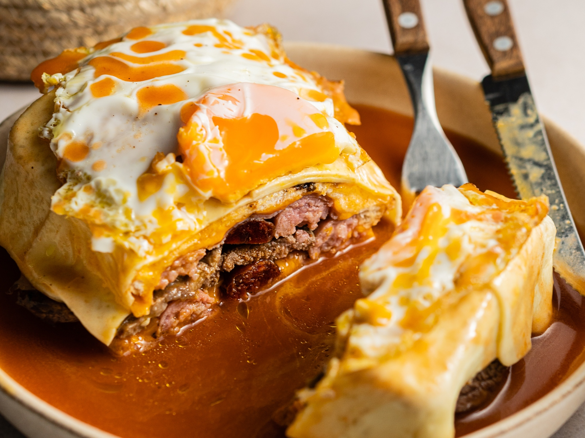

Francesinha

Discover the taste of Portugal with Francesinha – a savory sandwich from Porto. Packed with cured meats, steak, and a spicy tomato-beer sauce, it's a delicious blend of flavors, crowned with melted cheese. Served alongside crispy fries, it's a bite-sized journey to Portuguese culinary delight.
Ingredients
- Thinly sliced linguiça
- Sliced ham
- Juicy steak
- Fluffy white bread
- Spicy tomato and beer sauce
- Melted cheese
- Crispy fries (for serving)
Steps
- Start by grilling the thinly sliced linguiça and ham until they are lightly browned and have a nice smoky flavor.
- In a separate pan, cook the juicy steak to your preferred level of doneness. Season it with salt and pepper for added flavor.
- While the meats are cooking, prepare the spicy tomato and beer sauce. Combine tomatoes, beer, and your choice of spices in a saucepan. Simmer until the sauce thickens and the flavors meld together.
- Assemble the Francesinha by layering the grilled linguiça, ham, and cooked steak between slices of fluffy white bread.
- Pour the prepared spicy tomato and beer sauce generously over the sandwich, ensuring it soaks into the layers of meat.
- Add a generous layer of your favorite melted cheese on top of the sandwich. You can use a broiler or oven to melt the cheese until it's golden and bubbly.
- Carefully remove the Francesinha from the heat source, making sure the cheese is perfectly melted.
- Serve the Francesinha hot, accompanied by a side of crispy fries to complement the richness of the sandwich.